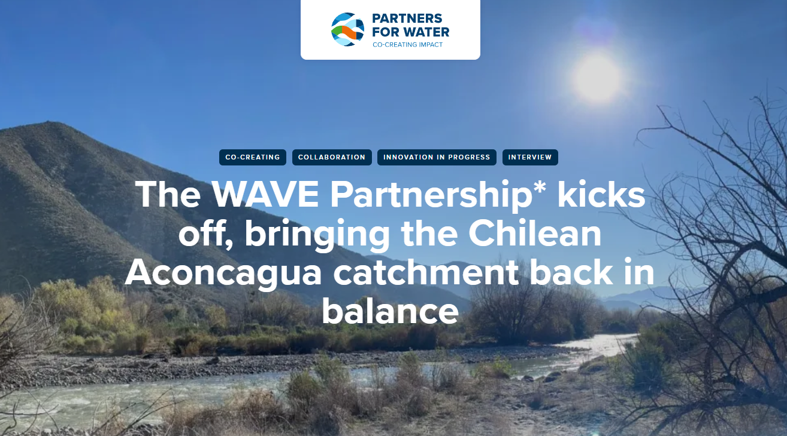
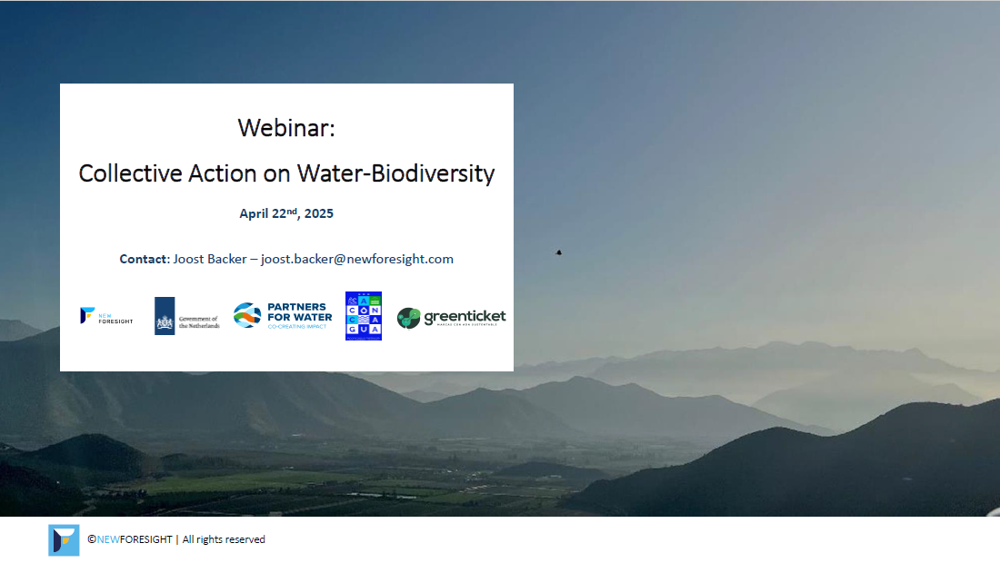
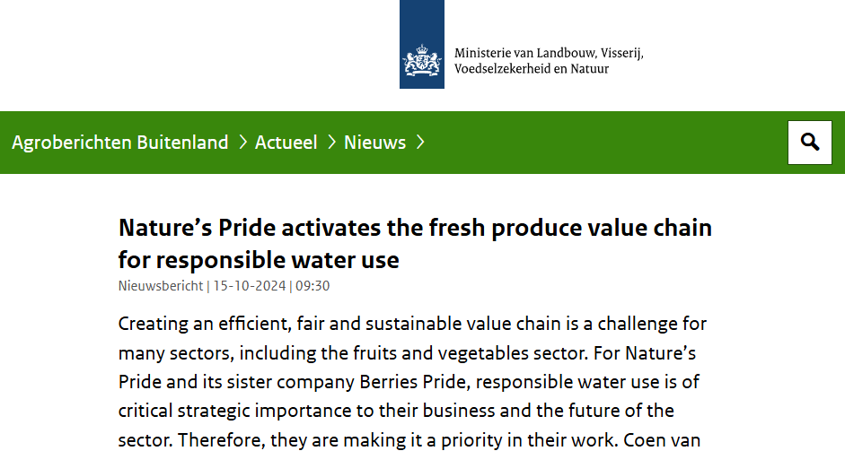
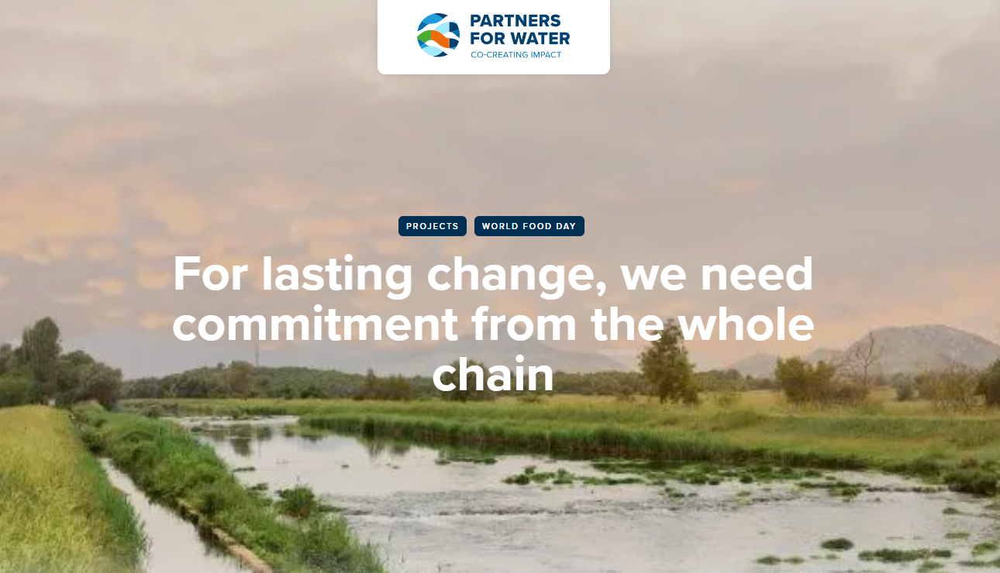
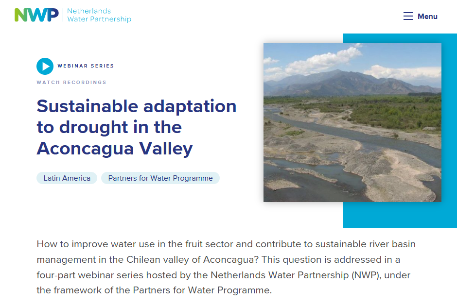
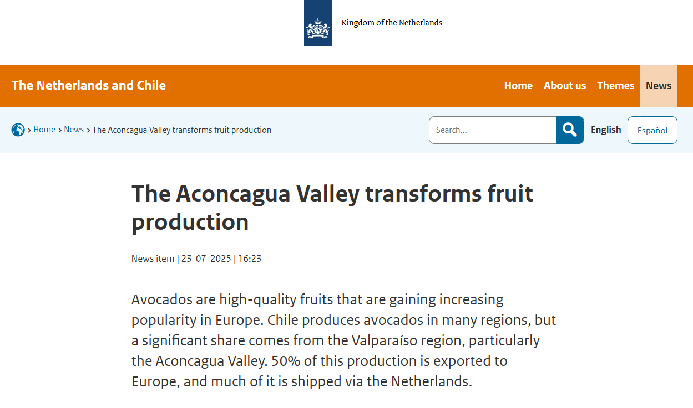

Stay up-to-date with WAVE Partnership developments
Updates and Announcements
The WAVE Partnership* kicks off, bringing the Chilean Aconcagua catchment back in balance.
Friday, 25 July 2025

Learning from Aconcagua, Chile, brought to scale
Between 4 and 11 July, the WAVE Partnership held a series of in-person workshops and events in the Aconcagua Valley in Chile, kicking off its three-year strategy for bringing the catchment back into balance.
The NewForesight team, led by Joost Backer and Susanna Kluiver, together with Greenticket, Partners for Water, the Netherlands embassy in Chile, and Nature’s Pride, convened key actors – farmers, buyers, and government representatives – to help advance the Partnership’s goal of bringing the catchment back into balance. Between 4th and 11th July, the WAVE Partnership held a series of in-person events in Chile to kick off the next three years.
Read more about itWebinar on Collective Action for Water-Biodiversity
Tuesday, April 22 2025

Exploring how collective action can drive sustainable production practices worldwide.
Water scarcity and biodiversity loss pose significant threats to global agricultural supply chains. In Chile’s Aconcagua Catchment, increasing water stress and climate change are endangering the future of fruit production. Tackling these challenges requires a collective action approach, bringing together farmers, buyers, governments, and international stakeholders to implement scalable solutions. This approach serves as a case-study in a webinar that took place on April 22, 2025.
Watch the webinar hereNature’s Pride activates the fresh produce value chain for responsible water use
October 15, 2024

Creating an efficient, fair and sustainable value chain is a challenge for many sectors, including the fruits and vegetables sector.
For Nature’s Pride and its sister company Berries Pride, responsible water use is of critical strategic importance to their business and the future of the sector. Therefore, they are making it a priority in their work. Coen van Iwaarden, Senior Advisor on Sustainable Business at Nature’s Pride, explores the work of both companies by explaining how they address water challenges in collaboration with their dedicated growers and clients.
Read more about itFor lasting change, we need commitment from the whole chain
October 16, 2023

No food can be produced without fresh water.
Given that our fresh water supply is diminishing, we need to carefully manage our scarce supply in order to achieve a future where nobody goes to bed hungry.
European countries import fruits and vegetables from countries such as Chile and Peru where water availability is a concern. ‘As a result, we are basically extending our water demand overseas’, says Simon. ‘This means that efficient water usage over there is also a responsibility for us over here. That is why we support collaborative processes that aim to improve production value chains in countries like Chile and Peru.’
Read more about itEl Mercurio: The second session of the program 'Cultivating Change' takes place in Quillota, Chile.
Saturday 12, July 2025

Cultivating Change: Technology, Networks, and Regenerative Practices for the Future.
Quillota hosted the seminar “Cultivating Change: Technology, Networks, and Regenerative Practices for the Future.”
The seminar was organized by the environmental consultancy Greenticket with the support of Corfo, in collaboration with Indap Valparaíso and the programs Transforma Fruticultura Sustentable (Perfruts) and Gestión Hídrica (Perhídrico).
Sustainable adaptation to drought in the Aconcagua Valley
June 2024

How to improve water use in the fruit sector and contribute to sustainable river basin management in the Chilean valley of Aconcagua?
This question is addressed in a four-part webinar series hosted by the Netherlands Water Partnership (NWP), under the framework of the Partners for Water Programme.
This series is an initiative of a Dutch and Chilean alliance of public and private parties, working together to support the agricultural sector in adaptation to increasing drought in the Aconcagua valley. The alliance forms a platform to match Chilean action and knowledge to the international value chains and to Dutch innovations in water and agriculture.
Read more about itThe Aconcagua Valley transforms fruit production
July 23, 2025

From water saving to regeneration: The Aconcagua Valley transforms
The Aconcagua Valley has been suffering from persistent drought for many years, which has caused repeated challenges. In response, a public-private project was launched in early 2021, with support from Partners for Water (a program of the Dutch government), aimed at making avocado cultivation more sustainable. A local and international alliance has since been formed, encompassing the entire value chain.
During the week of July 7, Nature’s Pride (a Dutch importer of exotic fruits) and NewForesight (a market transformation consultancy) visited Chile. The embassy organized an information session for national and regional representatives from the public and private sectors, where the progress of the project was presented. The private sector was represented by the associations of fruit producers and exporters. From the public sector, representatives of the ministries of Public Works and Environment were present, as well as the regional government of Valparaíso.
Read more about it